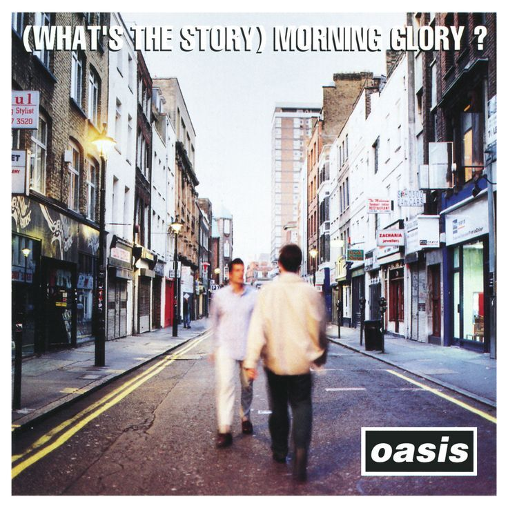

Wellcome to Oasis World |
|
Sejarah Band OasisPada tahun 1991, bassis Paul McGuigan, gitaris Paul Arthurs, drummer Tony McCarroll, dan penyanyi Chris Hutton membentuk sebuah band bernama the Rain. Tidak puas dengan Hutton, Arthurs mengundang dan mengaudisi kenalan Liam Gallagher sebagai calon penggantinya. Liam menyarankan agar nama band diubah menjadi Oasis, terinspirasi oleh poster tur Inspiral Carpets di kamar tidur masa kecilnya yang ia tinggali bersama saudaranya Noel, yang mencantumkan Oasis Leisure Center di Swindon sebagai tempatnya. Oasis memainkan pertunjukan pertama mereka pada tanggal 14 Agustus 1991 di klub Boardwalk di Manchester, peringkat terbawah di bawah Catchmen dan Sweet Jesus. Noel, yang bekerja sebagai roadie untuk Inspiral Carpets, pergi bersama mereka menonton band Liam bermain. Dia dan teman-temannya tidak menganggap Oasis terdengar spektakuler, namun dia mulai mempertimbangkan kemungkinan menggunakan grup tersebut sebagai saluran untuk serangkaian lagu yang telah dia tulis selama beberapa tahun. Noel mendekati grup tersebut untuk bergabung dengan ketentuan bahwa dia akan menjadi satu-satunya penulis lagu dan pemimpin band, dan bahwa mereka akan berkomitmen untuk mengejar kesuksesan komersial dengan sungguh-sungguh. Arthurs mengenang, "Dia punya banyak hal yang ditulis. Saat dia masuk, kami adalah sebuah band yang membuat keributan dengan empat lagu. Tiba-tiba, ada banyak ide.
Berikut beberapa lagu terbaik oasis
|
Galeri Photo |
|
|
|